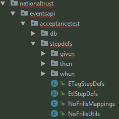

At the National Trust, we redesigned the website using BDD. Not a small project - they have over 4 million members and over 500 properties. The Website had to be responsive and serve interactive, responsive property pages, events pages and campaign pages. The core team was only about 8 but, crucially at least 5 contractors had extensive BDD experience already. The project was a huge success
BDD is easy to understand conceptually but hard to do well in practice
In essence, BDD is simply a project methodology in which requirements are written as "Scenarios" (in a language called Gherkin) plus automated tests, commonly referred to as "Acceptance Tests".
In Test Driven Development (TDD), a developer writes a failing test - typically at a Unit or Integration test level. They then write the minimum viable code to make the test pass. The rationale is that lean software is developed that meets requirements
In BDD, the idea is extended - PO's, BA's, Testers and Developers collaborate to describe the requirements as 'Behaviours'. These behaviours are written as 'Scenarios' in a language called 'Gherkin'. Scenarios and Gherkin are, deliberately, non-technical languages that all business users can understand. The Testers *AND* Developers then convert Scenarios directly into tests, most commonly using the tool Cucumber. Again, we have a failing test but:
Dan North is the originator of BDD, this video is from his company, Inviqa:The beginners guide to BDD
Within a BDD context, requirements are typically captured in a 'Story'. Thus would be written as a Story type Jira ticket.
How do we know the size, the granularity of a Story? Remember the acronym INVEST Stories should be...
Acceptance criteria are a set of rules which cover aspects of a system’s behavior, and from which scenarios can be derived.
Typically, Acceptance Criteria will sit at the top of a Story
Examples:
You can use the following AND ONLY the following keywords, collectively called GHERKIN:
Anatomy of a Scenario:
Scenario:[one line title] A party wishes to travel with one infant
Given[context] a party contains a single infant
And[more context] the infant is six months old
When[event]the website seating map is displayed
Then[outcome]the infant cannot be seated independently
And[another outcome]Tthe infant must sit with only the lead pax
Acceptance Criteria specify rules: they are specifications
Scenarios - concrete examples of acceptance criteria
Scenarios - help flesh out complex examples of criteria
once we have Scenarios, we can automate them as Acceptance tests
we can also examine where we might have gaps, edge cases and negative tests to add
A session in which Scenarios will be written collaboratively.
Typically 3 areas of the business will be represented:
A timeboxed period, say, 1 hour: "We have to deliver a Feature: allow customers to buy bags post-flight booking - what scenarios can we come up with in the next hour?"
Why three? Representing different business domains
BDD is designed to enable better communication by providing a common vocabulary and grammar that is understood by all participants. This way, business analysts, testers, developers are more likely to be all on the same page, sharing a common understanding, when requirements are being discussed.
This diagram demonstrates how the BDD 'testing stack' is differentiated between business facing and technology facing elements. But - the goal is that the ubiquitous language is used throughout and the tests become 'shared capital' across the business:
...where Scenarios start to make their way into the technical implementation
A Feature file:
A Cucumber report:
Once Cucumber has been run, a report can be produced to distribute to Stakeholders, showing progress of implemented features
- how do we organise, divide, separate features within Cucumber?
- how do we organise, divide, separate stepDefinitions (test code) within Cucumber?
- these are technical, logical decisions for the development team (this includes testers
This shows how the NT Team divided their features for the Website Redesign project:
....and this shows the corresponding structure for their stepdefinitions

the usual Scrum process and ceremonies would apply where we try and implement BDD:
...with the standard roles: